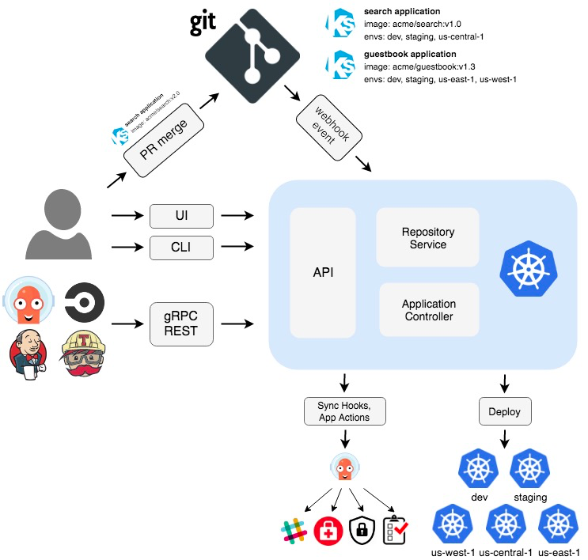

argo¶
github:
协议: Apache-2.0
语言: Golang
Open source Kubernetes native workflows, events, CI and CD
Argo 是一个开源的容器本地工作流引擎，用于在Kubernetes上完成工作。 Argo实现为Kubernetes CRD（自定义资源定义）。
定义工作流中每个步骤都是容器的工作流。
将多步骤工作流建模为一系列任务，或使用图形（DAG）捕获任务之间的依赖关系。
使用Kubernetes上的Argo工作流程，可以在很短的时间内轻松运行计算密集型作业，以进行机器学习或数据处理。
在Kubernetes上本地运行CI / CD管道，无需配置复杂的软件开发产品。
架构图:
